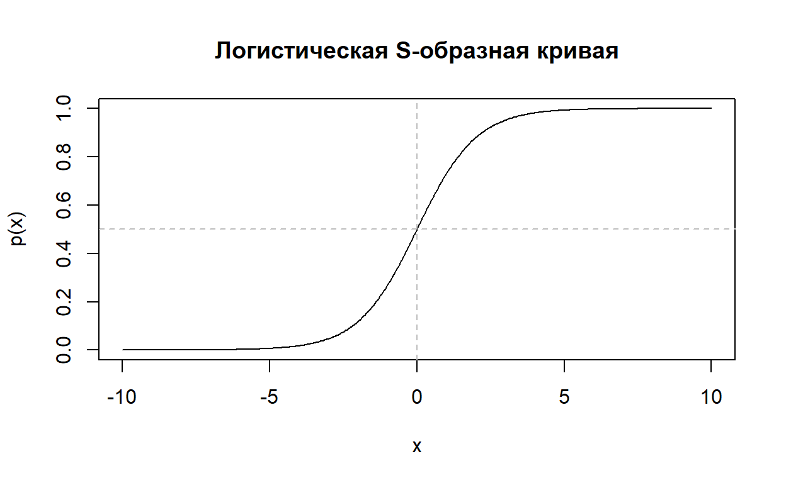

Представьтесь
Введение
Мы продолжаем погружаться в регрессионный анализ, и данный тьюториал посвящен логистической регрессии.
Логистическая регрессия относится к моделям бинарного выбора. Что это значит? Это значит, что зависимая переменная может принимать только два значения (например, 0/1, «да/нет», «сдал экзамен/не сдал экзамен»), а модель описывает, как вероятность одного из этих двух вариантов зависит от набора предикторов.
Примеры типичных задач:
- Участие в выборах: голосовал / не голосовал как функция возраста, образования, доверия к институтам, политических установок.
- Трудовая занятость: работает / не работает в зависимости от пола, образования, семейного статуса, наличия детей.
- Проживание в городе или селе, миграция: остался / уехал, как функция дохода, возраста, социального капитала.
- Принятие рискованного решения, безопасность: участвует / не участвует в проекте, принимает на себя какие-то риски / выбирает безопасное поведение и т.п.
На первый взгляд, если мы столкнулись с одним из вопросов, сформулированных выше, мы можем легко обойтись теми инструментами регрессионного анализа, которые нам уже знакомы: взять в качестве зависимой переменной бинарную переменную и провести множественный регрессионный анализ.
В примере с трудовой занятостью мы могли бы собрать данные про \(n\) индивидов, пришедших на биржу труда, и в качестве зависимой переменной выбрать бинарную переменную, равную единице для тех, кто устроился на работу, и нулю для тех, кто не смог найти подходящее место
В такой модели мы можем считать, что вероятность наступления события (например, трудоустройства) линейно зависит от некоторого фактора \(x\) (например, от заработной платы индивида). Тогда такую модель называют линейной моделью вероятности и записывают следующим образом:
\[ p_i=P(y_i=1)=\beta_1+\beta_2x_i, \] где \(Y_i\) – событие, которое равно 1, если оно наступило, и 0 – если нет, \(x_i\) – фактор, влияющий на наступления данного события, и \(P(y_i=1)\) – вероятность того, что событие наступит.
Проблематичность использования данной модели заключается в том, что предсказанные значения вероятности могут быть отрицательными или превышать единицу. Например, если мы пытаемся спрогнозировать вероятность сдачи зачета от количества потраченного на подготовку времени, то может оказаться, что вероятность при 2-х часах будет отрицательной, а при 100 часах, превысит единицу.Вот здесь этот пример рассмотрен подробнее.
Вызывает сомнения и предположение о том, что вероятность успеха зависит от объясняющей переменной линейно. Вряд ли увеличение времени подготовки с 20 до 30 часов должно приводить к такому же изменению вероятности сдачи зачета, как и увеличение с 1000 до 1010 часов.
Поэтому в прикладных исследованиях вместо линейной модели вероятности обычно используют одну из двух альтернатив: логит-модель или пробит-модель.
Логит‑модель — это другая привычная русская формулировка логистической регрессии.
В логит‑модели мы описываем не вероятность, а логит вероятности события через линейную комбинацию признаков:
\[ \text{logit}(p) = \log\left(\frac{p}{1 - p}\right) = \beta_0 + \beta_1 x_1 + \dots + \beta_k x_k. \]
- \(p = P(Y = 1 \mid X)\) —
вероятность «успеха», события, выбора варианта 1.
- Левая часть -— логарифм шансов события (odds) –
отношения вероятности наступления события к вероятности того, что это
событие не наступит \((1-p)\).
- Правая часть —- обычная линейная регрессия по предикторам \(x_1, \dots, x_k\).
Из этого выражения можно получить саму вероятность (формулу логистической функции):
\[ p = \frac{1}{1 + \exp\big(-(\beta_0 + \beta_1 x_1 + \dots + \beta_k x_k)\big)}. \]
Таким образом, логит‑преобразование переводит вероятность события \(p\) в логарифм шансов \(\log\big(p/(1-p)\big)\), который может принимать любые значения от \(-\infty\) до \(+\infty\). Это позволяет строить линейную модель на шкале логита, а затем через логистическую функцию автоматически возвращать результат в интервал вероятностей \([0;1]\) и интерпретировать коэффициенты как изменения логита и отношений шансов.
Например, пусть вероятность события \(p = 0{.}8\). Тогда шансы (odds) равны \(0{.}8/(1-0{.}8) = 4\): «шансы 4 к 1 в пользу события». Логит — это логарифм этих шансов: \(\log(4) \approx 1{.}39\). Если же \(p = 0{.}2\), то шансы \(0{.}2/0{.}8 = 0{.}25\), а логит \(\log(0{.}25) \approx -1{.}39\) — симметричен предыдущему.
Именно на этой логит‑шкале логистическая регрессия задает прямую \(\text{logit}(p) = \beta_0 + \beta_1 x_1 + \dots\), а уже затем эта прямая превращается в S‑образную кривую вероятностей.
S‑образная кривая, в свою очередь, при больших отрицательных значениях дает значения, близкие к 0, при больших положительных — близкие к 1, а в середине возрастает наиболее быстро.
Формула логистической функции: \[ p(x) = \frac{1}{1 + \exp(-(\beta_0 + \beta_1 x))} \]
Простейший график при \(\beta_0 = 0\), \(\beta_1 = 1\):
\[ p(x) = \frac{1}{1 + e^{-x}} \]

Пробит‑модель — это альтернативная логит‑модели регрессия для бинарного выбора, в которой вместо логистической функции используется стандартная нормальная функция распределения.
В логите мы моделируем логарифм шансов события, а в пробите моделируем z‑балл латентной непрерывной переменной: вероятность события задается как \(\Phi(\beta_0 + \beta_1 x_1 + \dots)\), где \(\Phi\) — стандартная нормальная кумулятивная функция. На практике обе модели решают одну и ту же задачу (моделирование \(P(Y=1)\) по предикторам) и часто дают очень похожие вероятности, но в пробит‑модели коэффициенты интерпретируются через нормальное распределение, а не через отношения шансов; выбор между логитом и пробитом обычно определяется традицией в конкретной области или удобством интерпретации.
Изучение пробит-модели, к сожалению, выходит за рамки нашего курса, и с ней желающие могут познакомиться самостоятельно. Например, вот здесь.
Предварительные вопросы
Практические задания
Для выполнения упражнений по данной теме мы возьмем один из классических наборов данных, посвященных легендарной истории корабля «Титаник».
Исторический контекст
14–15 апреля 1912 года произошло крушение пассажирского лайнера «Титаник», считавшегося на тот момент вершиной технического прогресса и «практически непотопляемым» судном. В катастрофе погибло более полутора тысяч человек, и уже тогда были сформированы подробные документальные записи: списки пассажиров, классы билетов, информация о посадке, данных о спасшихся и погибших. Позже эти архивы начали систематизировать и оцифровывать, что привело к появлению машиночитаемых таблиц с данными о пассажирах.
Ключевой момент популяризации датасета Titanic в аналитике и машинном обучении связан с запуском в 2012 году конкурса «Titanic: Machine Learning from Disaster» на платформе Kaggle. Организаторы предложили участникам построить модель, предсказывающую, выжил ли пассажир, на основе нескольких демографических и социальных характеристик. С этого момента Titanic стал де‑факто «классическим» учебным набором данных для введения в анализ данных, статистическое моделирование и бинарную классификацию.
Датасет Titanic представляет собой таблицу, где каждая строка — это пассажир, а столбцы — его характеристики.
- Целевая переменная
Survived— выжил (1) / не выжил (0).
- Социально‑демографические и контекстные признаки
Pclass— класс билета (1, 2, 3), часто трактуется как индикатор социального статуса.
Sex— пол пассажира.
Age— возраст.
SibSp— количество братьев/сестер и супругов на борту.
Parch— количество родителей и детей на борту.
Fare— стоимость билета.
Embarked— порт посадки (C, Q, S).
Набор содержит 891 наблюдения. Датасет интересен тем, что объединяет
числовые и категориальные переменные, имеет пропуски (например, в
Age или Cabin) и хорошо подходит для
демонстрации полного цикла работы: от очистки и кодирования признаков до
построения логистической регрессии и оценки качества классификации.
Упражнение 1 — Просмотр данных
Как всегда мы начинаем с просмотра данных. Загрузите набор
titanic и посмотрите на значения.
titanictitanictitanicУпражнение 2 — Базовая подготовка данных Titanic
Вам необходимо:
- Создать объект
titanic_cleanна основе данныхtitanic.
- Оставить только переменные:
Survived, Sex, Pclass, Age, Fare, SibSp, Parch, Embarked.
- Преобразовать переменные
Survived, Sex, Pclass, Embarkedв фактор.
- Заменить пропуски в
Ageна медиану возраста.
titanic_clean <- titanic |>
select() |>
mutate(
Survived = ,
Sex = ,
Pclass = ,
Embarked =
) |>
mutate(
Age = ifelse(is.na(Age), , Age)
)
str(titanic_clean)titanic_clean <- titanic |>
select(Survived, Sex, Pclass, Age, Fare, SibSp, Parch, Embarked) |>
mutate(
Survived = factor(Survived),
Sex = factor(Sex),
Pclass = factor(Pclass),
Embarked = factor(Embarked)
) |>
mutate(
Age = ifelse(is.na(Age), median(Age, na.rm = TRUE), Age)
)
str(titanic_clean)titanic_clean <- titanic |>
select(Survived, Sex, Pclass, Age, Fare, SibSp, Parch, Embarked) |>
mutate(
Survived = factor(Survived),
Sex = factor(Sex),
Pclass = factor(Pclass),
Embarked = factor(Embarked)
) |>
mutate(
Age = ifelse(is.na(Age), median(Age, na.rm = TRUE), Age)
)
str(titanic_clean)Упражнение 3 — Таблица выживаемости по полу
Построим таблицу выживаемости по полу пассажиров и оценим долю выживших в каждой группе.
Вам необходимо:
- Построить таблицу частот
Survived × Sex.
- Посчитать долю выживших для мужчин и женщин (по столбцам).
tab <- table( , )
prop_tab <- prop.table(tab, margin = )
tab
prop_tabtab <- table(titanic_clean$Survived, titanic_clean$Sex)
prop_tab <- prop.table(tab, margin = 2)
tab
prop_tabtab <- table(titanic_clean$Survived, titanic_clean$Sex)
prop_tab <- prop.table(tab, margin = 2)
tab
prop_tabУпражнение 4 — Базовая логит‑модель с полом
Оценим логистическую регрессию, в которой вероятность выживания зависит только от пола.
Вам необходимо:
- Оценить модель
Survived ~ Sexс помощьюglm()иfamily = binomial.
- Сохранить модель в объект
model_sex.
- Просмотреть результат
summary(model_sex).
model_sex <- glm( ,
data = ,
family = )
summary(model_sex)model_sex <- glm(Survived ~ Sex,
data = titanic_clean,
family = binomial)
summary(model_sex)model_sex <- glm(Survived ~ Sex,
data = titanic_clean,
family = binomial)
summary(model_sex)Упражнение 5 — Отношение шансов для мужчин
Посчитаем отношение шансов выживания мужчин по сравнению с женщинами
на основе модели model_sex.
Вам необходимо:
- Извлечь коэффициент при
Sexmaleизmodel_sex.
- Преобразовать его с помощью
exp()в отношение шансов.
- Вывести полученное значение.
coef(model_sex)
or_male <- exp(coef(model_sex)[ ])
or_malecoef(model_sex)
or_male <- exp(coef(model_sex)["Sexmale"])
or_malecoef(model_sex)
or_male <- exp(coef(model_sex)["Sexmale"])
or_maleУпражнение 6 — Добавляем класс и возраст
Теперь расширим модель, добавив класс билета и возраст пассажира.
Вам необходимо:
- Оценить модель
Survived ~ Sex + Pclass + Age.
- Сохранить модель в объект
model_sex_pclass_age.
- Посмотреть
summary(model_sex_pclass_age).
model_sex_pclass_age <- glm( ,
data = ,
family = )
summary(model_sex_pclass_age)model_sex_pclass_age <- glm(Survived ~ Sex + Pclass + Age,
data = titanic_clean,
family = binomial)
summary(model_sex_pclass_age)model_sex_pclass_age <- glm(Survived ~ Sex + Pclass + Age,
data = titanic_clean,
family = binomial)
summary(model_sex_pclass_age)Упражнение 7 — Сравнение моделей по AIC
Сравним качество простой и расширенной моделей с помощью AIC.
Вам необходимо:
- Вычислить AIC для
model_sexиmodel_sex_pclass_age.
- Сравнить значения AIC и определить, какая модель лучше по этому критерию.
AIC()
AIC()AIC(model_sex)
AIC(model_sex_pclass_age)AIC(model_sex)
AIC(model_sex_pclass_age)Упражнение 8 — Предсказанные вероятности и бинарный прогноз
Построим предсказанные вероятности выживания и бинарный прогноз при пороге 0.5.
Вам необходимо:
- Получить предсказанные вероятности
P_hatизmodel_sex_pclass_ageсtype = "response".
- Построить бинарный прогноз
pred_class(1, еслиP_hat >= 0.5, иначе 0).
- Преобразовать
Survivedвy_true(0/1) и посчитать долю верно классифицированных наблюдений.
P_hat <- predict( ,
type = )
pred_class <- ifelse( , 1, 0)
y_true <- as.numeric(titanic_clean$Survived) -
mean(pred_class == y_true)P_hat <- predict(model_sex_pclass_age,
type = "response")
pred_class <- ifelse(P_hat >= 0.5, 1, 0)
y_true <- as.numeric(titanic_clean$Survived) - 1
mean(pred_class == y_true)P_hat <- predict(model_sex_pclass_age,
type = "response")
pred_class <- ifelse(P_hat >= 0.5, 1, 0)
y_true <- as.numeric(titanic_clean$Survived) - 1
mean(pred_class == y_true)Упражнение 9 — Матрица ошибок (confusion matrix)
Построим матрицу ошибок для бинарного прогноза и фактических значений.
Вам необходимо:
- Использовать уже полученные
pred_classиy_true.
- Построить таблицу
table(Predicted = pred_class, Actual = y_true).
conf_mat <- table( , )
conf_matconf_mat <- table(Predicted = pred_class, Actual = y_true)
conf_matconf_mat <- table(Predicted = pred_class, Actual = y_true)
conf_matУпражнение 10 — Семейный размер как предиктор (без предсказаний)
В этом упражнении сделаем акцент на интерпретации нового предиктора, а не на предсказании.
Вам необходимо:
- Создать новый объект
titanic_clean2, добавив переменнуюFamilySize = SibSp + Parch + 1.
- Оценить модель
Survived ~ Sex + Pclass + Age + FamilySize.
- Сохранить модель в объект
model_family.
- Просмотреть
summary(model_family)и сравнить AIC сmodel_sex_pclass_age.
titanic_clean2 <- titanic_clean |>
mutate(FamilySize = )
model_family <- glm( ,
data = ,
family = )
AIC(model_sex_pclass_age)
AIC(model_family)
summary(model_family)titanic_clean2 <- titanic_clean |>
mutate(FamilySize = SibSp + Parch + 1)
model_family <- glm(Survived ~ Sex + Pclass + Age + FamilySize,
data = titanic_clean2,
family = binomial)
AIC(model_sex_pclass_age)
AIC(model_family)
summary(model_family)titanic_clean2 <- titanic_clean |>
mutate(FamilySize = SibSp + Parch + 1)
model_family <- glm(Survived ~ Sex + Pclass + Age + FamilySize,
data = titanic_clean2,
family = binomial)
AIC(model_sex_pclass_age)
AIC(model_family)
summary(model_family)Сохранить ответы
- Нажмите на кнопку, чтобы загрузить файл, содержащий Ваши ответы, в формате HTML.
- Сохраните файл на компьютере, а потом загрузите его в качестве ответа на странице курса.
(Если файл не загружается, попробуйте сохранить его, нажав правую кнопку мыши и выбрав "Сохранить ссылку как...")